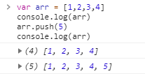
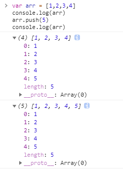
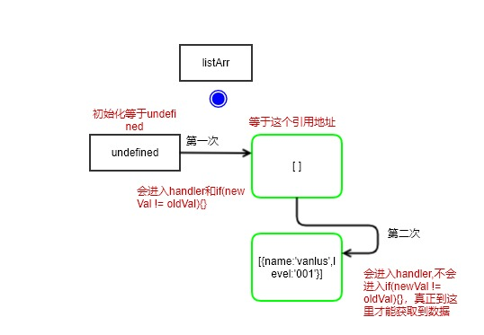
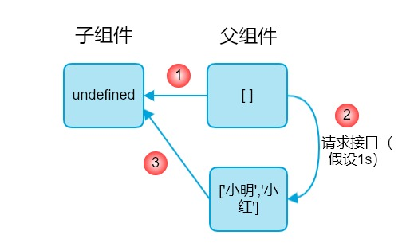

vue中watch如何正确使用
问题
之前写vue项目的时候,涉及到watch监听props中的数据时，总产生一个未知的bug,利用console log去排除问题，却找不出问题所在。举例：
1 | |
1 | |
这时候，F12查看控制台，报错了：
1 | |
再去console log 看一下输出了什么？
1 | |
这就很奇怪了，明明有值，为什么还报错。
原因
在WebKit中,JavaScript中的console.log函数是异步的
浏览器F12打开控制台,分别敲下面这两段代码,并且拉开显示全部结果，你就会发现问题了：
1 | |

展开

显示的不一样，但拉开发现结果是一样的，这是为什么呢？《JavaScript异步编程》书中是这么解释的：
WebKit的console.log并没有立即拍摄对象快照，相反，它只存储了一个
指向对象的引用，然后在代码返回事件队列时才去拍摄快照。而chrome的内核正是webkit；Node的console.log是另一回事，它是严格同步的，因此同样的代码输出却是正确的。
书中指出，JavaScript 环境提供的异步函数一般分为两大类：I/O函数和计时函数。console.log就是一个I/O函数。对于引用类型，console.log会先储存一个引用，因此在打印引用类型时结果不一定准确。
所以 console.log 到底是同步还是异步取决于运行环境。
解决方案
对于引用类型的值，父组件中data里面有初始值，并且值发生变化再传输给子组件并使用该值时，建议这么判断。

1 | |
总结
父子组件传值过程大概描述如下图，子组件没有default值，父组件有一个初始化值（引用类型），而后又再次请求设置了一个新值。

组件传值以及监听流程如下（deep和immediate都为true）：
1.第一次，监听的值发生改变，前后值分别是undefined和[],能触发watch中的handler函数，并且前后值确实不一样，这时候监听的值等于一个引用类型地址，而不仅仅等于一个空数组：[]；
2.父组件中的值发生变化；
3.第二次，监听的值发生改变, 前后值分别是[]和['小明','小红'],能触发watch中的handler函数,但是由于两者是同一个引用类型地址，所以此时两者的值是相等的。
这也就解释了为什么最上面代码报错，因为发生在第一次，数据还没到位。但是却能打印出值，这是因为，console log异步给造成的一种错觉：
1 | |
未完待续 :D
本博客所有文章除特别声明外，均采用 CC BY-SA 4.0 协议 ，转载请注明出处！